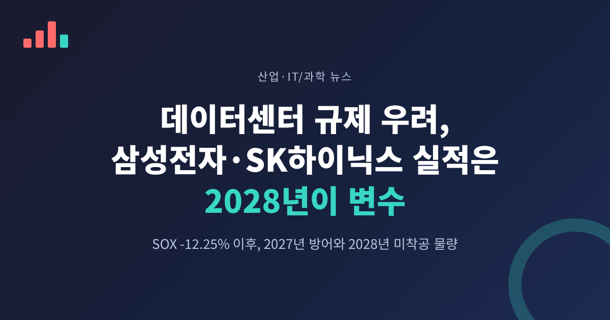
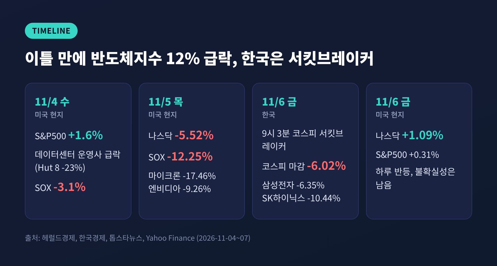
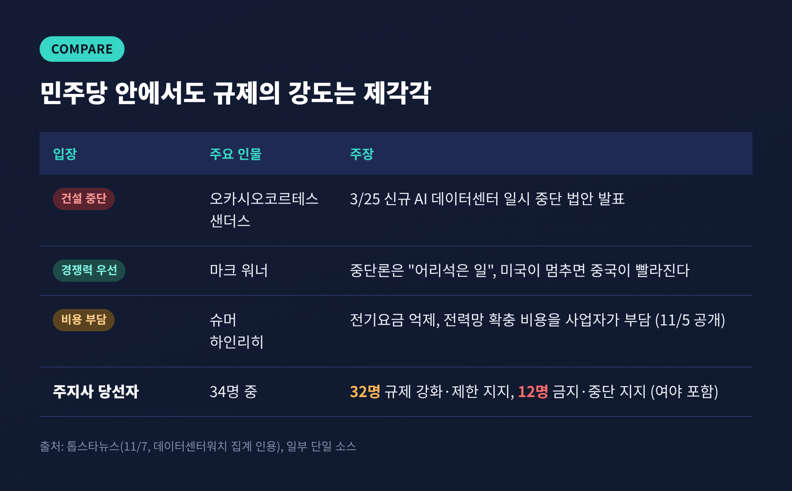
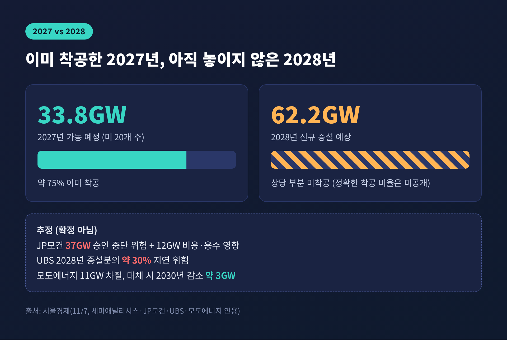
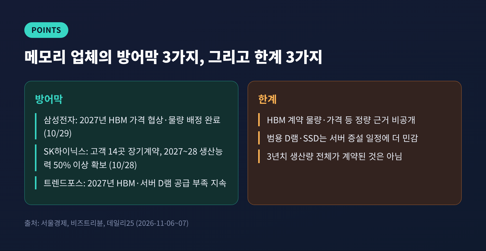

오늘은 미국 중간선거 이후 불거진 데이터센터 규제 우려가 삼성전자와 SK하이닉스 실적에 언제쯤 닿을지 정리해 보려 합니다.
3줄 요약
11월 3일 미국 중간선거에서 민주당이 상원과 하원을 모두 가져갔습니다. 텍사스와 조지아에서는 민주당 주지사가 나왔습니다. 두 주는 미국 AI 데이터센터 지출과 프로젝트의 약 3분의 1을 차지한다고 알려져 있습니다.
월가의 첫 반응은 의외로 차분했습니다. 11월 4일 S&P500은 1.6% 올랐습니다. 마이크로소프트(6.7%)와 아마존(6.1%)도 올랐습니다. 다만 데이터센터 운영사는 달랐습니다. Hut 8은 23% 내렸고, 반도체지수도 3.1% 하락했습니다.
판이 뒤집힌 것은 다음 날입니다. 11월 5일 나스닥은 5.52% 떨어져 24,315.00에 마감했습니다. 2025년 4월 이후 가장 큰 낙폭입니다. 필라델피아 반도체지수(SOX)는 12.25% 급락했는데, 2020년 3월 이후 최대 하락폭입니다. 마이크론이 17.46%, AMD가 17.26%, 엔비디아가 9.26% 내렸고 SK하이닉스 ADR도 13.4% 밀렸습니다.
한국 시장이 그 충격을 이어받았습니다. 11월 6일 코스피는 개장 직후 서킷브레이커가 발동됐고, 장중 한때 4,988.13까지 내려 2월 이후 처음으로 5,000선을 밑돌았습니다. 마감은 5,059.69(-6.02%)였습니다. 삼성전자는 이틀간 13.44%, SK하이닉스는 18.91% 떨어졌습니다. 마감 기준 수치는 톱스타뉴스 단일 소스라는 점을 밝혀 둡니다.

시장이 놀란 것과 달리, 확정된 규제는 없습니다. 민주당이 법안을 내더라도 트럼프 대통령의 서명이 필요합니다. 새 의회가 출범하는 것은 2027년 1월입니다.
민주당 안에서도 온도 차가 큽니다.
주 단위로 보면 흐름이 더 뚜렷합니다. 데이터센터워치 집계에 따르면 당선된 주지사 34명 중 32명이 규제 강화나 개발 제한에 찬성했고, 12명은 건설 금지나 일시 중단을 지지했습니다. 여야를 가리지 않습니다. 텍사스에서 승리한 지나 이노호사 당선인은 주민 보호 장치가 마련될 때까지 신규 승인을 멈추겠다고 공약했습니다. 공화당 소속 애벗 주지사도 지난 9월 인허가 일부를 멈춘 바 있습니다.
핵심은 구분입니다. 규제 강화와 전국적 건설 중단은 다른 이야기입니다. 일시 중단과 영구 금지도 다릅니다. 시장은 이 구분을 건너뛰고 가장 센 시나리오를 먼저 가격에 반영했습니다.

AI 서버는 건물이 올라가야 팔립니다. 데이터센터가 늦어지면 가속기 도입이 밀리고, 그 옆에 붙는 HBM과 서버용 D램 수요 시점도 흔들립니다. 한국 메모리 업체는 이 사슬의 가장 앞쪽에 있는 수혜자입니다.
여기에 위치도 겹쳤습니다. 11월 6일 코스피는 SK하이닉스와 삼성전자 비중이 큰 시장입니다. 외국인은 이날 SK하이닉스를 1조 9,240억 원, 삼성전자를 1,286억 원 순매도한 것으로 전해집니다(단일 소스). 미국 밤사이 낙폭이 아침 프리마켓 가격(삼성전자 -10.27%, SK하이닉스 -12.34%)에 곧바로 반영된 셈입니다.
월가 분석가들의 해석도 갈렸습니다. 에버코어 ISI의 아밋 다리아나니는 초기 반응은 매도이고, 핵심은 펀더멘털이 얼마나 바뀌느냐라고 말했습니다. 아젠트 캐피털의 제드 엘러브룩은 낙폭이 과해 보이며 "항복 국면"일 수 있다고 봤습니다.
이번 논쟁에서 가장 쓸모 있는 숫자는 시점입니다. 서울경제가 인용한 세미애널리시스 자료에 따르면, 미국 주요 20개 주에서 2027년 가동 예정인 데이터센터는 33.8GW이고 이 중 약 75%가 이미 착공했습니다. 반면 2028년 신규 증설 예상치는 62.2GW인데, 상당 부분이 아직 첫 삽을 뜨지 않았습니다. 새 인허가가 필요한 프로젝트일수록 규제의 영향을 더 받습니다.
기관별 추정은 이렇습니다.
모두 취소가 확정된 물량이 아니라 증권사와 분석기관의 가정에 기댄 추정입니다. 추정치끼리도 폭이 큽니다. 이 점을 감안해 읽으셔야 합니다.

삼성전자는 10월 29일 3분기 콘퍼런스콜에서 2027년 HBM 공급분의 가격 협상과 물량 배정을 모두 마쳤다고 밝혔습니다. SK하이닉스는 10월 28일 글로벌 고객 14곳과 장기공급계약을 맺어 2027~2028년 생산능력의 50% 이상을 확보했다고 했습니다. 확정 계약과 협의 중인 수요를 합치면 2029년까지 D램과 HBM이 사실상 팔릴 것이라는 전망도 덧붙였습니다. 다만 3년치 생산량 전체가 계약된 것은 아닙니다.
증권가 해석은 한쪽으로 모입니다.
반대편의 시각도 짚어야 합니다. 비즈트리뷴은 HBM 계약 규모, 물량, 가격 같은 정량 근거가 공개되지 않았다고 지적했습니다. 증권사 낙관론이 같은 방향으로 쏠려 있다는 점도 유의할 부분입니다. 장기계약이 있어도 고객사 투자 계획과 제품 가격이 바뀌면 실적은 달라집니다.

단기 일정은 분명합니다. 11월 9일 월요일 국내 증시가 열립니다. 미국 시장은 11월 6일 나스닥이 1.09% 반등했지만, 하루 반등만으로 불확실성이 풀렸다고 보기는 어렵습니다.
중기 관전 포인트는 다음과 같습니다.
빅테크는 규제를 비켜 가는 길을 이미 찾고 있습니다. 마이크로소프트는 지난 1월 주민 전기요금 부담을 기업이 지겠다고 밝혔습니다. 구글은 콘스텔레이션에너지와 890MW 추가 확보 계약을, 메타는 2035년까지 최대 6.6GW 규모의 원전 관련 전력 계약을 발표했습니다. IEA는 전 세계 데이터센터 전력 소비가 2025년 485TWh에서 2030년 약 950TWh로 늘 것으로 봅니다. 규제의 핵심이 결국 전기 문제라는 뜻입니다.
정리하면 이렇습니다. 주가는 하루 만에 움직였지만, 실적은 그렇게 움직이지 않습니다.
"2027년은 이미 깔린 레일이고, 2028년이 아직 놓이지 않은 구간입니다."
지금 필요한 것은 공포나 낙관이 아니라 확인입니다. 규제 문구가 나오고 빅테크 투자 계획이 정리되면, 지금의 추정치들은 하나씩 확정 숫자로 바뀔 것입니다. 그때 이번 급락이 과잉이었는지 선반영이었는지 답이 나올 것이라고 생각합니다.
본 글은 공개 보도를 정리한 해설이며 특정 종목의 매수·매도를 권유하는 투자 권유가 아닙니다. 인용한 전망은 각 기관의 추정이고, 투자 판단과 책임은 본인에게 있습니다.